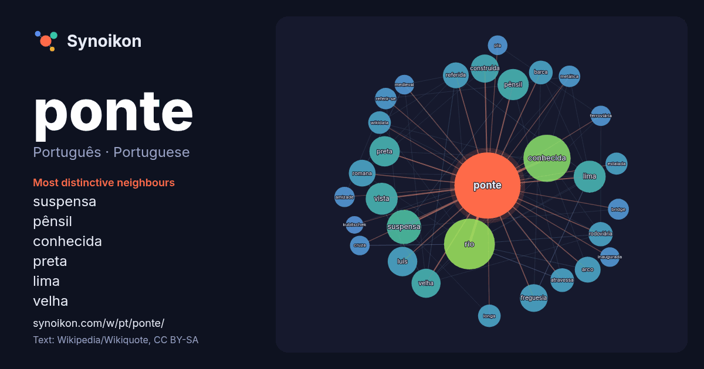

Português · Portuguese · word of the day list
ponte
“bridge” · The words found around it in 1816 instances from Portuguese Wikipedia, Wikiquote.

Most distinctive neighbours
- suspensa 43×
- pênsil 39×
- conhecida 33×
- preta 32×
- lima 28×
- velha 24×
- referida 24×
- rodoviária 22×
- vista 22×
- barca 22×
- atravessa 21×
- wikidata 21×
- estaiada 20×
- luís 19×
- construída 19×
- arco 19×
- romana 19×
- metálica 18×
- freguesia 18×
- referir-se 17×
× = how many times more often than in general Portuguese Wikipedia text.
Most frequent neighbours
- rio 101
- conhecida 87
- suspensa 46
- lima 40
- vista 40
- município 39
- pênsil 38
- preta 36
- luís 34
- velha 33
- cidade 32
- construída 31
- freguesia 30
- romana 28
- maria 27
- arco 26
- joão 26
- referida 26
- chamada 25
- localizada 25
In context
- Para outros significados, veja Ponte (desambiguação). Ponte é uma construção que permite interligar ao mesmo nível pontos não acessíveis separados por rios Wikipedia snippets · Ponte
- Nota: "Ponte Preta" redireciona para este artigo. Para outros significados, veja Ponte Preta (desambiguação). A Associação Atlética Ponte Preta é uma Wikipedia snippets · Associação Atlética Ponte Preta
- A Ponte 25 de Abril, anteriormente chamada de Ponte Salazar, é uma ponte suspensa rodoferroviária sobre o rio Tejo que liga a cidade de Lisboa (margem Wikipedia snippets · Ponte 25 de Abril
- "ponte Presidente Costa e Silva" redireciona para este artigo. Para a ponte no Rio Grande do Norte, veja ponte Presidente Costa e Silva (Natal). Ponte Wikipedia snippets · Ponte Rio-Niterói
- A Ponte Vasco da Gama é uma ponte atirantada sobre o estuário do rio Tejo, na área da Grande Lisboa, ligando o Município de Alcochete a Lisboa e Sacavém Wikipedia snippets · Ponte Vasco da Gama
- Nota: Para a ponte de Santarém com o mesmo nome, veja Ponte D. Luís I (Santarém). A Ponte de D. Luís, também conhecida como Ponte Luís I ou Ponte Luiz I, é Wikipedia snippets · Ponte de D. Luís (Porto)
- Ponte D. Luís pode referir-se a: Ponte de D. Luís (Porto) Ponte de D. Luís (Santarém) Wikipedia snippets · Ponte D. Luís
- A Ponte de D. Maria Pia ou Ponte Maria Pia é uma infraestrutura ferroviária, que transportava a Linha do Norte sobre o Rio Douro, entre as cidades do Porto Wikipedia snippets · Ponte de D. Maria Pia
More Portuguese words
- arte
- ciência
- clima
- comida
- coração
- cão
- deus
- dinheiro
- família
- força
- gato
- história
- língua
- morte
- natureza
- ouro
- saúde
- trabalho
- trem
- verdade
- vida
- água
Precomputed on 2026-10-09 with default settings (±5 words, medium corpus). The interactive map can refresh it with live data.